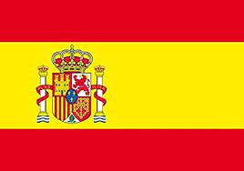

Compétences
Anglais
Niveau B2

Espagnol
Niveau B1

Français
Langue Maternelle

Logiciels
Pack Office

Centres d'intérêts
Bénévolat
Initiateur sportif
Création de séances d’entraînements de rugby et participation à la cohésion de l’équipe
Niveau Cadette
Sports
Rugby
Pratique du rugby depuis 5 ans, championne petit sud
Ski
Pratique du ski depuis l'âge de 2 ans
Passionnée de sports
Rugby, athlétisme, ski, natation
Voyages
Amérique : Etats-Unis, Canada, Guadeloupe
Europe : Espagne, Suisse, Italie, Grèce, Croatie, Iles Canaries, Royaume Uni
Afrique : Tunisie